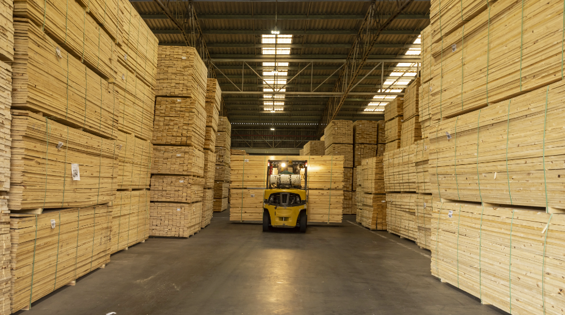
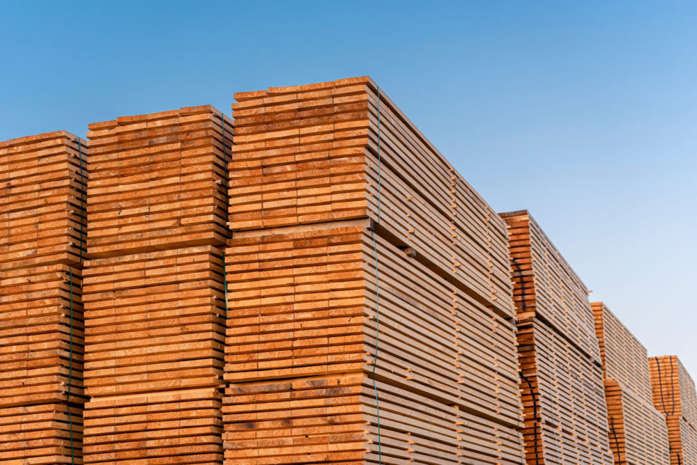
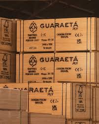
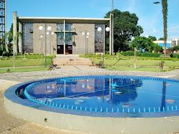

Rentabilidade Econômica
Produtor de Pinus
O produtor rural obtém rentabilidade com a venda da madeira de Pinus para diversos destinos, como serrarias, indústrias de celulose e papel, e fábricas de compensado. Os custos de produção envolvem desde a aquisição de mudas de alta qualidade, preparo do solo, plantio, até as práticas de manejo ao longo do ciclo de vida da floresta, como controle de pragas e doenças, podas (que aumentam o valor da madeira serrada) e desbastes (que geram receitas intermediárias). A rentabilidade final é um balanço entre a produtividade da floresta (volume de madeira por hectare), os preços de mercado da madeira e a eficiência na gestão da propriedade, que inclui a escolha da espécie de Pinus mais adaptada à região e um manejo silvicultural otimizado para os objetivos do produtor.
Indústria de Compensado
A indústria de compensado é um pilar crucial na cadeia de valor da silvicultura, gerando valor agregado significativo à madeira. Sua rentabilidade é derivada da transformação da tora de Pinus em painéis de compensado de diversas especificações e aplicações, como na construção civil (para formas de concreto, divisórias), na indústria moveleira (móveis, estofados), em embalagens (caixas, paletes) e em outras áreas mais específicas. Os custos de produção englobam a aquisição da matéria-prima (toras de Pinus), os custos com energia elétrica e térmica para os processos de laminação e secagem, a mão de obra especializada, a manutenção e depreciação de equipamentos, e as despesas com logística e comercialização. A competitividade no mercado é influenciada pela eficiência dos processos industriais, pela qualidade e diversidade dos produtos oferecidos, pela capacidade de inovação e pela gestão rigorosa dos custos.
Comercialização Internacional
O compensado de Pinus brasileiro desfruta de um reconhecimento considerável no mercado internacional, consolidando-se como um importante produto de exportação que contribui de forma expressiva para a balança comercial do Brasil. A exportação não apenas gera divisas, mas também fortalece a economia nacional e a indústria florestal. A competitividade no cenário global é determinada por múltiplos fatores, como a qualidade intrínseca do compensado brasileiro (beneficiada pelo rápido crescimento do Pinus e pela tecnologia de produção), os preços competitivos (influenciados pelos custos de produção e pela taxa de câmbio favorável), e a eficiência da logística de exportação, que inclui transporte e desembaraço aduaneiro. Além disso, a obtenção de certificações florestais reconhecidas internacionalmente, como o FSC (Forest Stewardship Council) ou o PEFC (Programme for the Endorsement of Forest Certification), é um diferencial competitivo, pois atestam que a madeira utilizada provém de florestas manejadas de forma responsável e sustentável, abrindo portas para mercados mais exigentes e valorizando o produto.
Retorno Econômico para o Município de Clevelandia
Para o município de Clevelandia, localizado no sudoeste do Paraná, a silvicultura do Pinus e a subsequente indústria de compensados representam um pilar econômico fundamental, gerando um retorno econômico multifacetado:
- Geração de Empregos: A cadeia produtiva do Pinus, desde o plantio e manejo das florestas até as operações complexas nas fábricas de compensado e as atividades de transporte, cria uma vasta gama de empregos diretos e indiretos, contribuindo para a fixação da população tanto no campo quanto na área urbana.
- Geração de Renda: Produtores rurais que cultivam o Pinus, trabalhadores florestais, operários da indústria e prestadores de serviços recebem salários e pagamentos pela venda da madeira, impulsionando o comércio local e o consumo, e dinamizando a economia municipal.
- Arrecadação de Impostos: As atividades de silvicultura e as operações industriais geram uma significativa arrecadação de impostos (como ICMS, IPTU, ISS), que são recursos essenciais para o município. Esses impostos são revertidos em investimentos cruciais em infraestrutura (estradas, saneamento), saúde, educação e outros serviços públicos essenciais para a população de Clevelandia.
- Desenvolvimento da Cadeia Produtiva: A presença consolidada da silvicultura e da indústria de compensado atrai e fomenta o surgimento de outras atividades econômicas correlatas. Isso inclui empresas de transporte florestal, serviços de manutenção de máquinas e equipamentos, fornecedores de insumos agrícolas e florestais, e serviços de consultoria especializada, criando um ecossistema econômico robusto.
- Atração de Investimentos: O sucesso e a comprovada rentabilidade do setor florestal e madeireiro em Clevelandia podem atrair novos investimentos para o município, incentivando a diversificação econômica, a modernização das fábricas e a criação de ainda mais oportunidades de negócios e empregos.